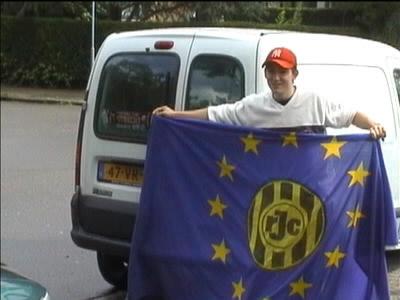
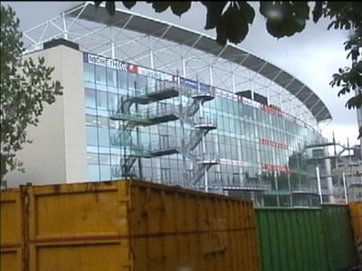
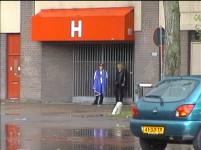
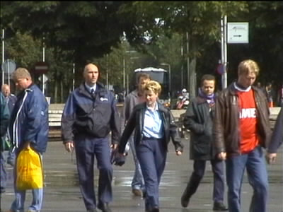
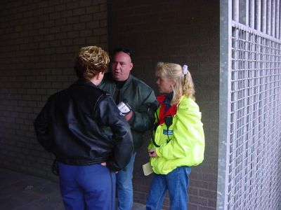
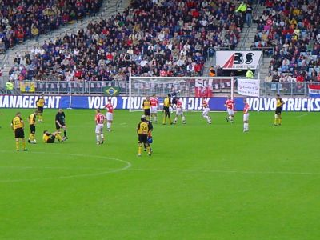
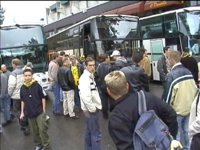

|
FC Utrecht - Roda JC (4-1) 16 september 2001 |

Deze Roda-supporter gelooft nog in een Europees avontuur.

De nu nog nieuwere Galgenwaard viel behoorlijk tegen.

De blij-in-eigen-blik supporters wachten op de busgasten.

En daar komen de FP-bussen reeds.

Zelfs Wiel kreeg het niet klaar mijn camera binnen de poort
te krijgen. De stewards haalden ten einde raad het "wetboek"
erbij om hun gelijk te bewijzen.

Roda speelde een beroerde partij en verloor dikverdiend.

En zo gingen we weer eens zonder punten naar huis.
©KPD